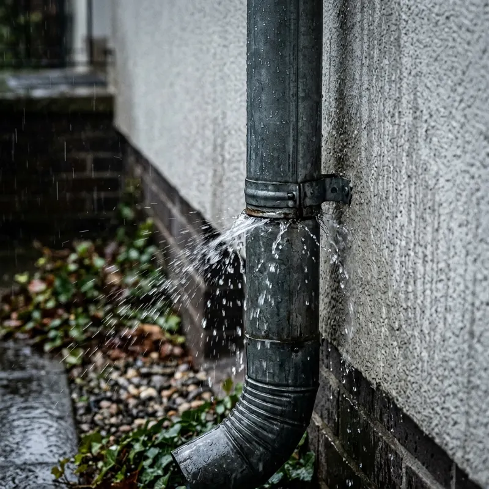
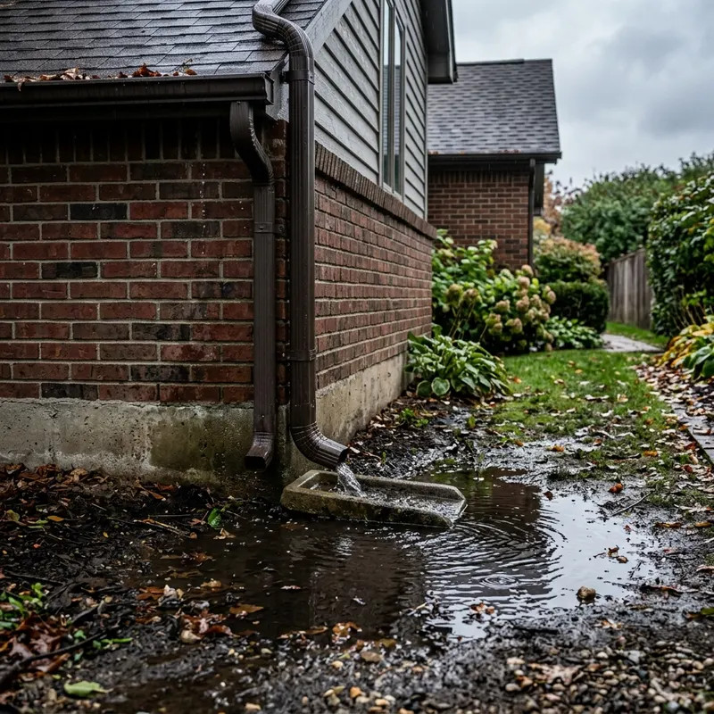
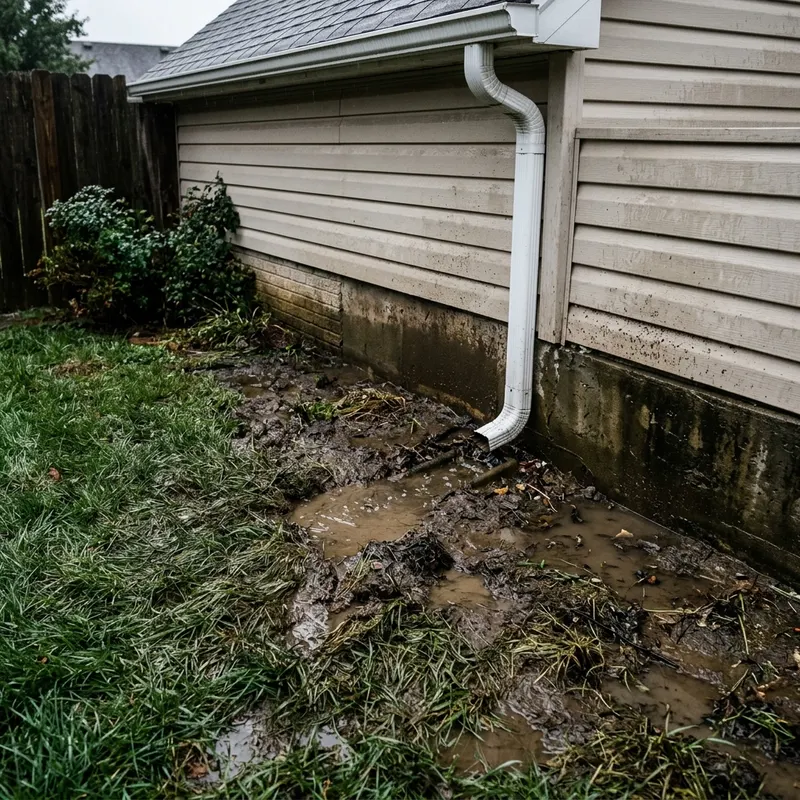

Downspout Cleaning Cartersville GA
A clogged downspout can cause gutter overflow, soil erosion, landscaping damage, and water near the foundation. We clear clogs, clean connections, check outlets, test water flow, and inspect underground lines when needed.
Why Does Downspout Cleaning Matter in Cartersville?
Cartersville gets about 48 inches of rain a year, spread over about 131 rainy days. Pine needles and oak leaves can block downspouts, so water spills out in the wrong place and can cause erosion around your home.

Does heavy rain in Cartersville make downspout cleaning more important?
Yes. Cartersville gets about 48 inches of rain a year, so downspouts handle a lot of water. When pine needles, oak leaves, or other debris block a downspout, water spills out in the wrong place and can cause erosion around your home.
What Are the Signs of a Clogged Downspout?
A downspout does not always show an obvious blockage. These six signs can help you spot a drainage problem.
1. Water Spills Over the Gutter
What it means: Water is reaching the gutter but may not be moving through the outlet and downspout fast enough.
What to do: Watch the downspout during rain. Little or no water at the bottom can point to a blockage.
2. Very Little Water Comes Out
What it means: A partial blockage may be restricting the flow.
What to do: Have the pipe checked and cleared rather than waiting for the next heavy storm.
3. Water Pools Near the Home
What it means: Water may not be reaching the intended discharge area.
What to do: Check where the water is collecting and have the drainage path inspected.
4. Soil or Landscaping Is Washing Away
What it means: Runoff may be leaving the system in an unwanted location.
What to do: Check the outlet, extension, and surrounding area for signs of concentrated water flow.
5. A Downspout Section Is Loose
What it means: A separated elbow or connection can allow water to escape before reaching the proper outlet.
What to do: Have the section checked and reassembled or repaired when necessary.
6. Water Backs Up During Heavy Rain
What it means: A restriction may be preventing enough water from moving through the system.
What to do: Schedule an inspection before the problem leads to repeated overflow or runoff.
How Do We Clean Your Downspouts?
We use a practical five step process. The method changes based on the type of blockage and the part of the drainage system being cleaned.
1. We Inspect the Drainage Path
We check the gutter outlet, visible downspout sections, elbows, connections, and discharge area. We look for leaves, pine needles, built-up debris, loose sections, and visible damage. For underground lines, camera inspection can help identify the location of a blockage or a damaged section.
2. We Remove Accessible Debris
Hand removal is used where debris can be safely reached. This may include material collected around the gutter outlet, upper downspout, elbows, and accessible connections. We use ladder safety practices when elevated access is required. Two-story homes are assessed before work begins so the appropriate access method can be used.
3. We Flush the Downspout
Pressure flushing can help move remaining debris through a suitable drainage line. An air blower may also be used when it is appropriate for the system. The purpose is to open the water path without using a method that could damage the downspout or its connections.
4. We Check Underground Lines When Needed
A visible downspout can look clean while an underground line remains blocked. For underground drainage, camera inspection can help show what is happening inside the pipe. This can help separate a blockage from a possible collapsed section. Underground downspout drain clearing is handled according to the type of obstruction and the available access point.
5. We Reassemble and Test the Flow
If a section or elbow needs to be removed during cleaning, we put it back together after the blockage is addressed. We take care around landscaping and the discharge area. We then perform a water flow test. This confirms that water can move through the cleaned section and reach the intended outlet.
What Can Cleaning Fix, and What Can It Not Fix?
Cleaning can remove debris and other blockages that restrict water movement. It can also help identify problems with connections, outlets, and visible drainage sections.
Cleaning cannot repair a collapsed underground pipe, replace a damaged downspout, correct every grading problem, or solve a foundation issue that has another cause. Those problems require a different type of work.

How Much Does Downspout Cleaning Cost in Cartersville?
Downspout cleaning cost varies based on the number of downspouts, building height, blockage severity, access, and whether underground drainage work is needed.
Current Pricing
- Single downspout: $[ADD: single downspout price range]
- Whole home: $[ADD: whole home price range]
- Underground clearing: from $[ADD: underground clearing starting price]
A home with several accessible downspouts and light debris requires less work than a two-story home with severe blockages or an underground drainage line.
What Is Included?
- ✔️ Inspection of accessible downspout components
- ✔️ Hand removal of reachable debris
- ✔️ Pressure flushing when appropriate
- ✔️ Air blower use when appropriate
- ✔️ Camera inspection for underground lines
- ✔️ Reassembly of sections removed during cleaning
- ✔️ Care around landscaping
- ✔️ Final water flow testing
How Should You Compare Quotes?
Ask what the price covers. A quote for gutter debris removal may not include clearing the downspout. Before choosing a service, ask whether the company checks the gutter outlet, cleans the downspout, tests water flow, and handles underground drainage when needed.
Affordable downspout cleaning should still include the work needed to address the actual blockage.
Simple 3-Step Process
Call Us
Call [PHONE] and tell us what you are seeing. Useful details include gutter overflow, standing water, a blocked outlet, or an underground drainage concern.
Get the Quote
[ADD: response time and quote process]
Schedule Service
[ADD: booking and service timing]
What Other Services Can Help Your Drainage System?
- Gutter Cleaning Gutter cleaning removes leaves and debris from the collection area so less material can enter the gutter outlet.
- Gutter and Downspout Cleaning Cleaning both parts addresses the connected drainage path from the gutter outlet through the downspout.
- Leaf Cleaning Removing pine needles, oak leaves, and built-up debris helps keep the gutter system open before material reaches the downspout.
- Downspout Repair and Extension A damaged or separated section may need repair rather than cleaning. An extension can also help move water farther from the home when the existing discharge point is too close.

Why Hire Our Downspout Cleaning Company?
Homeowners need to know exactly what they are paying for. We focus on the drainage path and check the flow after cleaning.
- ✔️ [ADD: years in business and founder story]
- ✔️ [ADD: license and insurance details]
- ✔️ We use hand clearing, pressure flushing, and an air blower where appropriate.
- ✔️ We use camera inspection for underground drainage lines.
- ✔️ [ADD: guarantee or warranty]
- ✔️ [ADD: real company differentiator, such as flow testing or customer photos]
We do not stop at removing visible debris. We check the outlet, connections, discharge area, and water flow so you can see what happened during the service.
What Will You See After We Finish?
After service, you should have a clear understanding of the work completed. You may see:
- ✅ Cleared gutter outlets
- ✅ Removed debris
- ✅ Reassembled downspout sections
- ✅ A cleaned discharge area
- ✅ Water flowing through the cleaned line
- ✅ [ADD: photos sent after service, if offered]
The final water flow test is an important part of the service. It gives us a direct way to check whether the cleaned section is moving water.

What Do Local Homeowners Say?
"[ADD: REAL REVIEW WITH FIRST NAME AND AREA]"
- Customer Review 1"[ADD: REAL REVIEW WITH FIRST NAME AND AREA]"
- Customer Review 2"[ADD: REAL REVIEW WITH FIRST NAME AND AREA]"
- Customer Review 3"[ADD: REAL REVIEW WITH FIRST NAME AND AREA]"
- Customer Review 4Where Do We Provide Service?
We serve Cartersville and the surrounding communities listed below.
- 📍 Cartersville, including ZIP codes 30120 and 30121
- 📍 Emerson
- 📍 Euharlee
- 📍 Adairsville
- 📍 Kingston
- 📍 White
- 📍 Cassville
- 📍 Stilesboro
- 📍 Calhoun
- 📍 Rome
- 📍 Canton
- 📍 Dallas
- 📍 Rockmart
- 📍 Marietta
Homes near Lake Allatoona can have runoff and soil concerns when water is not directed properly.
Homes near the Etowah River can also have local runoff and drainage considerations.
Frequently Asked Questions
How often should downspouts be cleaned in Cartersville?
At least twice a year is a useful starting point for many homes. Homes near pine or oak trees may need more frequent cleaning because needles and leaves can build up between visits.
What is the average downspout cleaning cost?
Our current prices are $[ADD: single downspout price range] for a single downspout, $[ADD: whole home price range] for a whole home, and underground clearing starts at $[ADD: underground clearing starting price].
Does gutter cleaning include downspouts?
Not always. Gutter cleaning removes debris from the gutter, but the downspout can still contain a blockage. Ask whether both parts are included before booking.
What is underground downspout drain clearing?
It is the process of finding and removing a blockage in a buried drainage line connected to a downspout. Camera inspection can help locate the problem before the appropriate clearing method is chosen.
How can you tell if an underground pipe is blocked or collapsed?
Both problems can cause slow or stopped drainage. Camera inspection can help show whether debris is blocking the line or whether the pipe has a damaged section.
What happens if my underground line has no exterior cleanout?
A missing cleanout can limit direct access to the buried line. Camera inspection may help identify the problem and available access points before excavation is considered.
Can you clean two-story homes?
Yes. Two-story homes are assessed for safe access before work begins. The method used will match the height, layout, and location of the downspouts.
Can clogged downspouts cause foundation problems?
A blockage can cause water to collect closer to the home instead of reaching its intended discharge area. Repeated runoff near a foundation can add to existing drainage concerns, especially where soil is being washed away.
Does aluminum downspout cleaning require special care?
Yes. Aluminum sections and connections can be damaged by excessive force. Cleaning methods should be selected based on the material and condition of the system.
What is the difference between gutter cleaning and downspout cleaning?
Gutter cleaning removes debris from the channels that collect roof runoff. Downspout cleaning addresses the pipe that carries that water away from the gutter.
How often should gutters and downspouts be checked after heavy rain?
Check them after major storms if you notice overflow, standing water, soil erosion, or reduced flow. These signs can reveal a restriction before the next storm.
Can cleaning stop soil erosion around my home?
It can help when a blocked downspout is causing water to overflow or discharge in the wrong place. It cannot correct erosion caused by grading, landscape design, or other drainage issues.
How do I find downspout cleaning near Cartersville?
Start with companies that clearly explain what their service includes. Look for details about downspout clearing, flow testing, underground drainage, pricing, and service areas rather than comparing only the advertised price.
Get Your Downspouts Flowing Again
Do not wait for another heavy rain if water is already overflowing the gutter or collecting near your home.
We can inspect the drainage path, clear accessible blockages, check underground lines when needed, reassemble sections, and test the water flow.
Call [PHONE] today for Downspout Cleaning Cartersville GA or to ask about the drainage problem at your property.